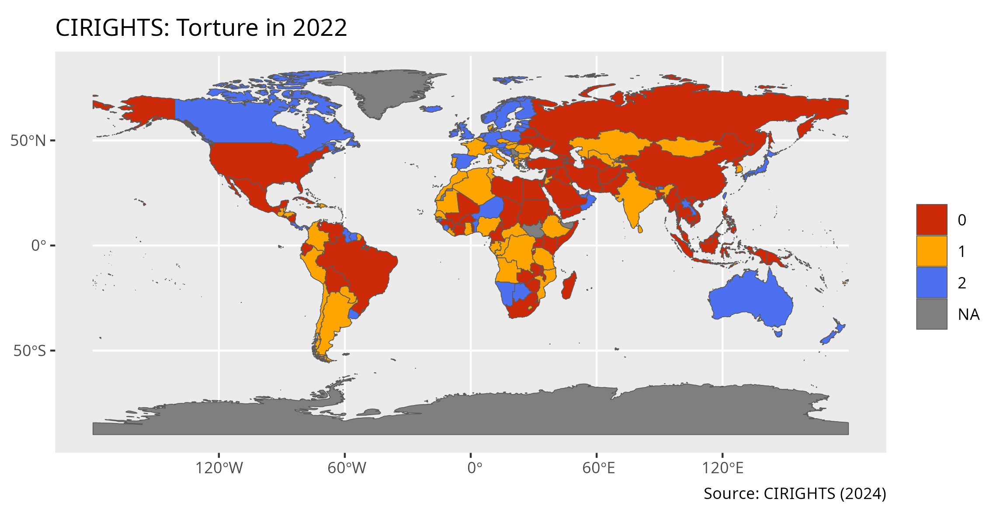
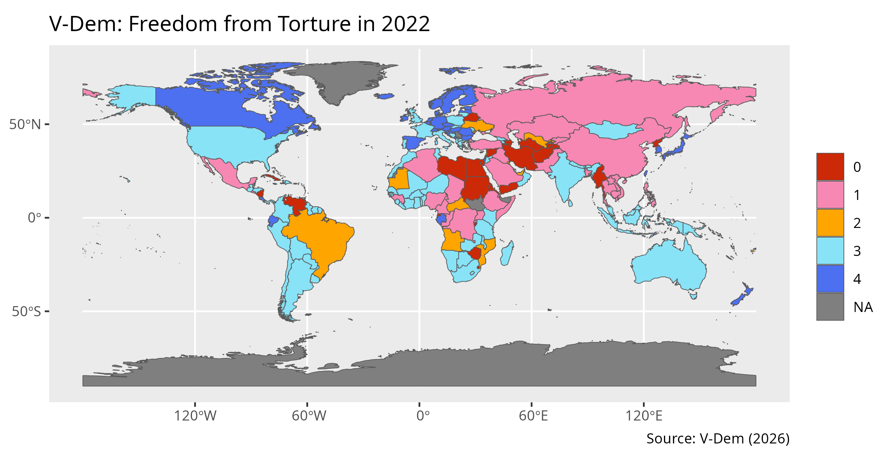
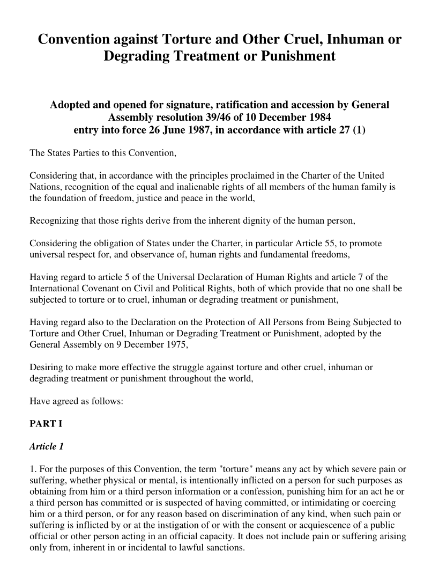
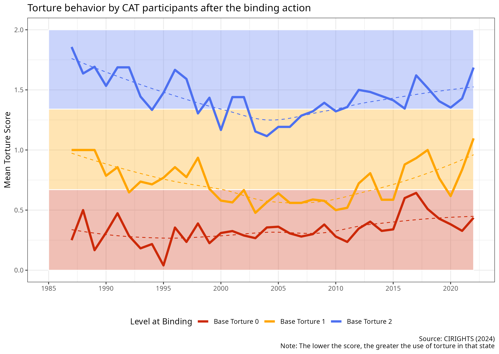
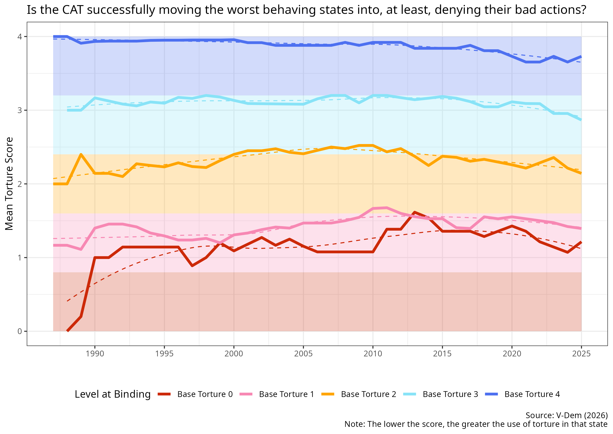
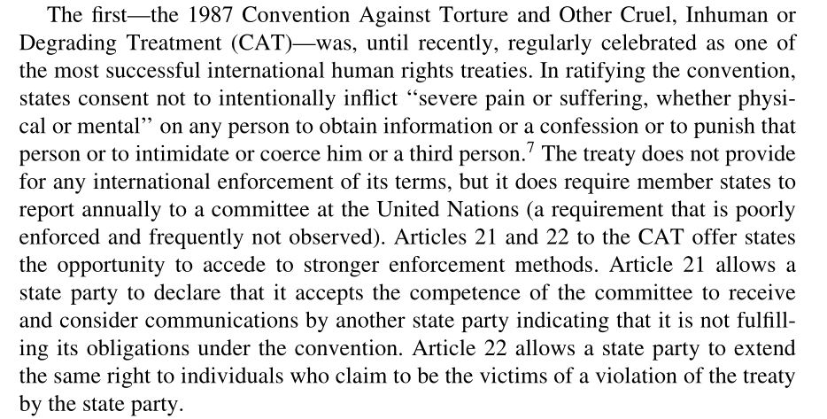
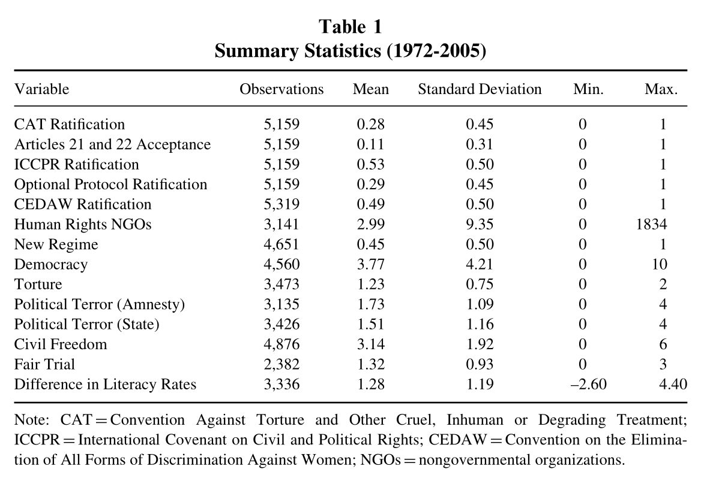
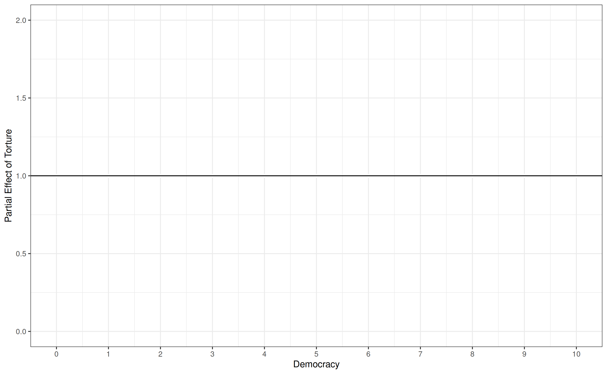
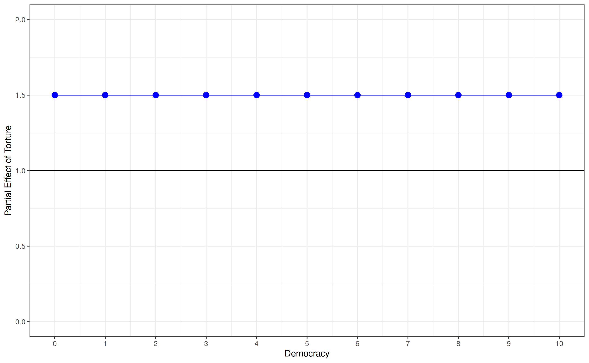
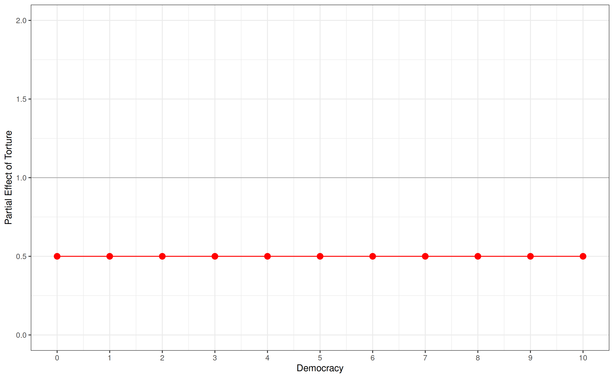

Today’s Agenda
Section 2: How effective have international institutions been in reducing the use of torture by governments around the world?
- Hathaway (2007) “Why Do Countries Commit to Human Rights Treaties?”
Justin Leinaweaver (Fall 2026)
How effective have international institutions been in reducing the use of torture by governments around the world?
Week 6: Defining and Measuring the Outcome
Week 7: The Convention Against Torture (CAT)
Week 8: Explaining the Effect of the CAT on Torture
Week 9: The International Criminal Court (ICC)
Week 10: Can the ICC help us reduce global torture?
Week 11: Case Studies of ICC Effectiveness
How effective have international institutions been in reducing the use of torture by governments around the world?
Week 6: Defining and Measuring the Outcome
Reviewed the Amnesty International Global Report for 2026
Discussed the impacts of torture on current events
Analyzed the CIRIGHTS and V-DEM measures of torture
Identified cross-national and cross-temporal variation in the data



Analyzing the Treaty
Legalization
Rational design conjectures
Treaty specific provisions


How effective have international institutions been in reducing the use of torture by governments around the world?
Week 6: Defining and Measuring the Outcome
Week 7: The Convention Against Torture (CAT)
Week 8: Explaining the Effect of the CAT on Torture
Week 9: The International Criminal Court (ICC)
Week 10: Can the ICC help us reduce global torture?
Week 11: Case Studies of ICC Effectiveness


Hathaway (2007): The Model
Interests
- ?
Hathaway (2007): The Model
Interests
- States…
Hathaway (2007): The Model
Interests:
- States will join human rights treaties whose benefits outweigh their costs
Hathaway (2007): The Model
Interests:
- States will join human rights treaties whose benefits outweigh their costs
Institutions
- ?
Hathaway (2007): The Model
Interests:
- States will join human rights treaties whose benefits outweigh their costs
Institutions
Domestic: States vary in whether or not non-state actors can enforce treaty rules on the government
Domestic: States vary in how much authority the executive has to make policy
International: Most human rights treaties lack meaningful external enforcement
Hathaway (2007): The Model
Interests:
- States will join human rights treaties whose benefits outweigh their costs
Institutions
Domestic: States vary in whether or not non-state actors can enforce treaty rules on the government
Domestic: States vary in how much authority the executive has to make policy
International: Most human rights treaties lack meaningful external enforcement
Interactions
- ?
Hathaway (2007): The Model
Interactions
- Violating the rules of the treaty ONLY MATTERS if your system allows domestic actors to enforce treaty rules
State executives who struggle for policy “wins” may see treaty-making as a useful tool to show their influence
States with larger NGO populations will experience more pressure to join human rights treaties
Newer states who need to establish a “good” reputation are more likely to join
States with a good human rights record have little to gain from joining (and may be exposed for bad), but dictators with bad records can join without fear of punishment
States surrounded by other states who join will feel pressure to do the same
Hathaway (2007): The Model
Interests:
- States will join human rights treaties whose benefits outweigh their costs
Institutions
Domestic: States vary in whether non-state actors can enforce treaty rules and the powers of the executive
International: No meaningful external enforcement
Interactions
Domestic enforcement capacity matters for costs and benefits
Domestic collateral consequences matter for costs and benefits
Transnational collateral consequences matter for costs and benefits
Hathaway (2007): Data Sources & Operationalizations
Outcome Variables
- Ratification of the CAT (UNTC)
- Acceptance of CAT Art. 21 and 22 (UNTC)
Predictor Variables
Domestic Enforcement Capacity = Level of democracy from 0-10 (Polity IV)
Collateral Consequences = Count of human rights NGOs actively working (Human Rights Internet)
Government Use of Torture = CIRI Human Rights (based on reports from Amnesty International and the US State Department)

Hathaway (2007): Domestic Enforcement Capacity Test

Hathaway (2007): Domestic Enforcement Capacity Test

Hathaway (2007): Domestic Enforcement Capacity Test

Hathaway (2007): Domestic Enforcement Capacity Test

Hathaway (2007): Domestic Enforcement Capacity Test

The Convention Against Torture (CAT) (1984)
- Per Hathaway (2007), has the CAT been effective?
For Next Class
Hollyer & Rosendorff. (2011). “Why Do Authoritarian Regimes Sign the Convention Against Torture? Signaling, Domestic Politics and Non-Compliance.” Quarterly Journal of Political Science. 6: p275–327